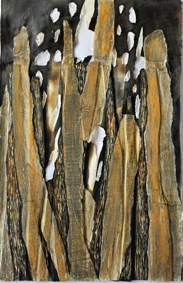
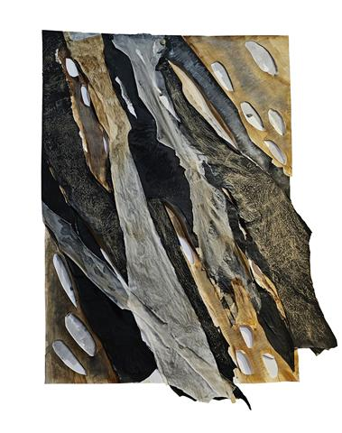

.jpg)
Der Buchtitel mit der Arbeit „Baumkrone" von Beate Debus.
Im Jahr seines 70. Geburtstages versammelte Holger Uske in diesem Band neue und einige wenige ältere Erzählungen und stellte sie unter dem Titel „Stunden-Tanz" zusammen. Erstmals war dieses wiederum in dr. ziethen verlag Oschersleben erschienene 160-seitige Buch zur Leipziger Buchmesse 2025 zu sehen. Die Suhler Premiere dafür fand als Doppelpremiere gemeinsam mit Christine Hoba, Halle, und ihrem Gedichtband „Papierkokons" am 10. April im Buchhaus Suhl statt.
Das Buch enthält in fünf Kapiteln 38 Erzählungen von einer Seite bis zu acht Seiten Länge. Die Kapitel werden eingeleitet von neuen Arbeiten auf Papier, zumeist Collagen, der Dermbacher Künstlerin Beate Debus, mit der Holger Uske inzwischen zum vierten Mal in einem Buchprojekt zusammenarbeitet. Nachfolgend geben ein paar Auszüge Einblicke in das Buch.
Aus: Draußen
Er geht noch umher als ein Fremder. Die Welt, so neu, so unentdeckt, zeigt sich ihm in trockenen Schollen am Boden, in knorrigen Bäumen, harten Gräsern und ein paar blassen Blüten daran. Zu denen er nicht schaut. Er schaut nirgendwohin. Er setzt vorsichtig Schritt um Schritt. Das eigene Gehen ist noch neu. Er ist noch nicht lange fort, fort aus dem behüteten Haus, in dem er zuweilen nur von den Spielern ans Licht gebracht wurde, mit Leben erweckt. Aber tun musste, was sie wollten. Bis dieses Flüstern aufkam: Es gibt da ganz hinten einen Zauberer, der kann uns lebendig machen. Der schafft, dass wir selber unsrer Wege gehen können.
Das Blut in ihm ist noch so kalt. Das muss sich erst Bahn brechen, muss die hölzernen Glieder durchwärmen. Die Arme kann er schon schlenkern. Wie wunderbar ist es, eine Faust zu ballen. Und dann die Finger wieder zu strecken. Er glaubt es noch gar nicht. Zupft ein bisschen an jedem Finger. Das Holz ist dort schon verwandelt. Durch das Meisterwerk des Schnitzers ziehen sich dünne blaue Linien. Die Hand ist noch kalt. Diejenige, die misst, wie diejenige, die geprüft wird. Du musst dir Zeit geben, hatte der Zauberer gesagt. Nur von hier solltest du rasch verschwinden, sie mögen es nicht, wenn ihr eigen werdet.
(Beginn der ersten Geschichte des Bandes, nach dem Bild „Zu den Gärten" von Frank Hauptvogel)
.jpg)
Dr. Harry Ziethen, Holger Uske, Christine Hoba und Heike Becker vom Buchhaus Suhl am Ende der Doppelpremiere am 10. April 2025 in Suhl. Foto: Ulrike Blechschmidt
„Dieser Dichter, der, in Sachsen geboren, seit Langem in Thüringen Heimat hat, ist im Chor der gegenwärtig entstehenden Literatur, die nicht umhin kann, sich (es geht eben doch um viel) der Ernsthaftigkeit zu verschreiben, keine schrille, aber eine unbeirrbare Stimme. In seinem Sprechen ist das Nebeneinander von Glanz und Schönheit, Hinterfragen und Gefahr aufs Engste greifbar."
(André Schinkel, Rückseite des Umschlags)
Aus: Eine andere Geschichte
Pilatus lehnt an einer Mauer. Wirft eine Münze in die Höhe, fängt sie wieder auf. Wie seit zweitausend Jahren. Der Prokurator. Trägt seine Jeans. Von Rom künden vielleicht noch die Sandalen. Sie gehen vorüber an ihm, die Heerscharen Neugieriger, Müder, Durstiger, nicht eingestellt auf die Hitze am Rande der Wüste, auf die kalten Wetter in 800 Metern Höhe. Fröstelnd: nach den Schauspielen, die sie verpassten. Die sie sicher auch damals verpasst hätten, beschäftigt mit der Essenzubereitung, mit dem Anlegen von Schmuck, mit Gedanken an den Liebsten, mit dem morgigen Tag. Pilatus sieht in ihre Gesichter, sucht ihre Augen. Findet meist nur Bilderabgleich: das also ist, was ich unlängst im Fernsehen auf jener CD in meinem unvergleichlichen Baedecker sah – Gegenüber die Ruinen. Davon gehen die Reden. Dass die Hohepriester den Mann zu ihm brachten. Wie hatte er das Amt gehasst an solchen Tagen. Pessach stand bevor. Und sein Weib, das hatte er gespürt, war milder gestimmt in diesen Frühlingstagen. Wie von fern schimmerten noch einmal ihre leisesten Stunden auf. Durch die Gassen zog etwas wie Erwartung auf das Fest. Und dann das. Hier bringen wir dir –
Bis heute bringen sie Männer, Frauen. In Bussen, in Zügen, Flugzeugladungen, in vergitterten Transportern. Und lassen unerwähnt, dass er den Mann freigeben wollte. Damals. Wie er es heute wieder tun würde. Aber sie ließen ihm keine Ruhe. Nun ist sein Name geächtet. So lange das so sein wird, so lange muss er hier stehen und warten, bis einer sagen wird: der sprach nur aus, was die Mehrheit wollte, den trifft keine Schuld. Der eine, der er wusste von Anfang an, verstarb noch am selben Tag …
Pilatus zieht die Sportmütze tiefer ins Gesicht. Alle Bilder, die sie später von ihm malten, trügen. Er kommt durch die Zeit. Er weiß sich ihnen anzupassen. Was sind schon zweitausend Jahre. Basarbudenzauber. Eisenzeit. Münzenmagie. Sie werden es aufschreiben, hatte der Mann noch gesagt und ihm zugezwinkert. Die Schrift wird die Wahrheit sagen. Aber sie werden sie nicht hören wollen. Sieh es dir an. Warte einfach ab.

Aufsteigen. Collage von Beate Debus. Holz auf gebranntem Papier

Verweht. Collage von Beate Debus, Pergament
Aus: Der Apparat
Der Apparat war unscheinbar. Der Mann hatte ihn mitten auf dem Marktplatz aufgebaut. Ein paar Kinder beobachteten ihn aufmerksam, aber hielten Abstand. Der Mann mit seinem geflochtenen Bart und dem breitkrempigen Hut sah zu außergewöhnlich aus. Die Markttage waren auf Dienstag, Donnerstag und Freitag zusammengestrichen worden vom Senat. Der Versammlungsmontag durfte nicht beeinträchtigt werden. Und samstags sollten die Bürger gefälligst die Gehwege fegen statt am Markt Maulaffen feilzuhalten. Mitunter ergab sich also am Mittwoch noch was. Die Woche teilen durch einen Überraschungsbesuch. Und sei es ein großer hagerer Mann, der an einer eigentümlichen Kiste hantierte auf einem eigenen Gestell. Die Kinder warteten darauf, dass mit dem Apparat etwas passierte. Vielleicht gab er einen Knall von sich. Rauchsäulen könnten in den Himmel steigen, dunkle Wolken die herausgeputzten Fassaden am Markt vernebeln. Vielleicht zog sogar ein fauliger Geruch durch die Gassen und vertrieb die heimlichen Gaffer, die als Spaziergänger getarnt nur darauf warteten, dass etwas passierte in der kleinen Stadt.
Der Mann schien ein Räderwerk aufzuziehen. Er drehte bedächtig an einer Kurbel, die er zuvor sorgfältig eingepasst hatte. Erklang eine Melodie? Folgte ein Rattern? Nichts dergleichen geschah. Treten Sie näher!, rief der Mann nun, kommen Sie ruhig heran. Für ein paar Heller können Sie hier Ihre Lebenszeit erweitern. Ein Batzen bringt Ihnen ein ganzes Jahr. Einmalig in der Region. Und längst im In- und Ausland gerühmt: Hubertus mit seinem Zeitgenerator. Treten Sie näher. Kinder die Hälfte! Meine Damen und Herren, wandte er sich den Kindern zu, bitte sehr, es ist kein Spuk.
Die Kinder schubsten sich gegenseitig näher. Vielleicht war die Schule heute ausgefallen. Vielleicht hatten die Lehrer davon gehört. Und einer hatte dem anderen hinter vorgehaltener Hand warnend zugeflüstert: Monsieur, Sie sind der Erste, der sich für diesen Schwachsinn interessiert, halb höhnisch, halb hochachtungsvoll vorgebracht. Man hatte freilich schon von dem Mann gehört: Hubertus, der Zeitenspender, Hubertus, der Zeitenfresser. Und was war eigentlich ein Generator? Woraus machte man Zeit? Besser, die Kinder gingen erstmal hin.